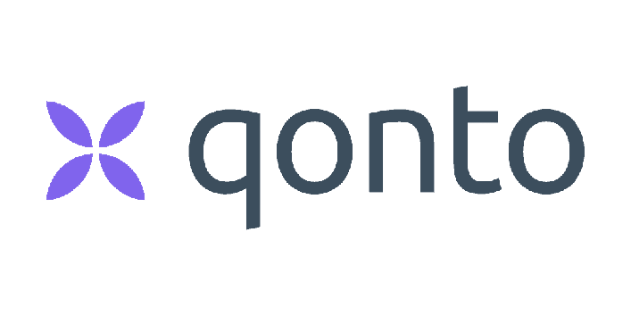

A PROPOS
Pour en savoir plus sur moi, c'est par ici 👇🏻
Hello ! Moi c'est Noémie, j'ai 25 ans. Je suis diplômée d'un Bachelor Chef de projet en communication et publicité à l'ESP Paris. Je termine actuellement mon alternance de fin de Mastère à l'ESD au sein du cabinet de conseil international Leyton en tant que Chargée de SEO pour le site France 🇨🇵.
Dans le cadre de mes études, j'ai eu la possibilité de réaliser de nombreuses expériences au sein de diverses entreprises. J'ai saisi cette opportunité pour découvrir des contextes divers et des enjeux différents. Cette variété d'expériences m'a permis de découvrir, à chaque fois, quelque chose sur moi même et d'affiner mon projet professionnel.
Témoignage
"Noémie est déjà très pro ! Elle fait partie intégrante de l'équipe, gère ses missions de manière autonome et est hyper réactive sur tous les sujets. C'est un plaisir de travailler avec elle !"Camille ADAM, Chef de Produit Marketing, LEYTON
Mon parcours
BLT Développement
Chargée de webmarketing
1ers pas dans la communication digitale au sein d'un annonceur pure-player : community management, création de contenus, SEO, newsletters... J'en apprend beaucoup sur les fondamentaux du marketing et la stratégie dans un environnement à forte croissance et intensité.
NB : La société n'existe plus aujourd'hui.
Agence Mots-clés
Consultante junior
Passage du côté agence. Découverte des relations presse, de la gestion de projets offline et de la gestion de la relation avec les clients. Je comprend à ce moment-là que je préfère travailler chez un annonceur.
Voir le site webMaison Arnaud Delmontel
Chargée de communication
Retour chez l'annonceur. Au sein d'une PME familiale, je développe mes compétences opérationnelles dans la gestion de projets on (contenus, community management, gestion du back office) et offline (packaging, merchandising, print, relations presse, shooting photo).
J'en apprend aussi beaucoup sur le merchandising, les packagings et l'animation commerciale sur les points de vente.
Bewell Connect
Chef de produits Junior
Toujours chez l'annonceur, mais je change d'univers pour découvrir le monde de la santée connectée. Au travers de mes missions (création de contenus, analytics, community management), je comprend que j'ai un vrai intérêt pour le marketing digital et que je dois poursuivre dans cette voie pour mon Master.
Je suis diplômée de l'ESP ! 👩🏻🎓
Voir le site webUX-Republic
Chargée de marketing digital
Stage très formateur auprès de collègues passionnés par leur métier. J'y ai appris tous les fondamentaux du marketing digital (SEO, SEA, Email Marketing, CRM...) et de l'UX-Design (user research et création d'interface) grâce à des projets intéressants. Mon envie d'évoluer dans ce milieu se renforce.
Voir le site webDeloitte
Chef de projets Data Marketing
Premiers pas au sein d'un grand groupe international à la Défense. J'apprécie la dimmension internationale et l'intensité. Mon travail consiste à créer des emailings (invitations, newsletters, partage de contenus commerciaux) pour toutes les BU de Deloitte France, soit 17 campagnes envoyées par semaine, du ciblage jusqu'à l'analyse des résultats en passant par la création du template en HTML/CSS. J'apprend à utiliser le CRM Salesforce et son outil d'email marketing BtoB Pardot.
Voir le site webLeyton
Chargée de SEO
J'approfondis mes connaissances en SEO : SemRush, mots-clés, netlinking, contenus, analytics... pour améliorer le référencement du site France. Grâce à cette alternance, j'ai compris que je souhaitais m'orienter dans cette branche du marketing digital tout en évoluant dans un contexte international à forte croissance.
Voir le site webEt pour la suite ? 👀
Dès la fin du mois de septembre, je rejoins l'équipe Acquisition de Qonto en tant que SEO Manager !
Ce poste est très complet sur les enjeux liés au SEO : technique, contenus, netlinking... Il correspond totalement à ce que je recherche en terme d'opportunité professionnelle post-études.
J'aurai par ailleurs la chance de travailler pour les différents sites de Qonto (France, UK, Allemagne, Espagne et Italie) et de conserver ainsi une dimension internationale qui me plait beaucoup.
I'm still in progress and I hope that I always will be.
Michelle Obama